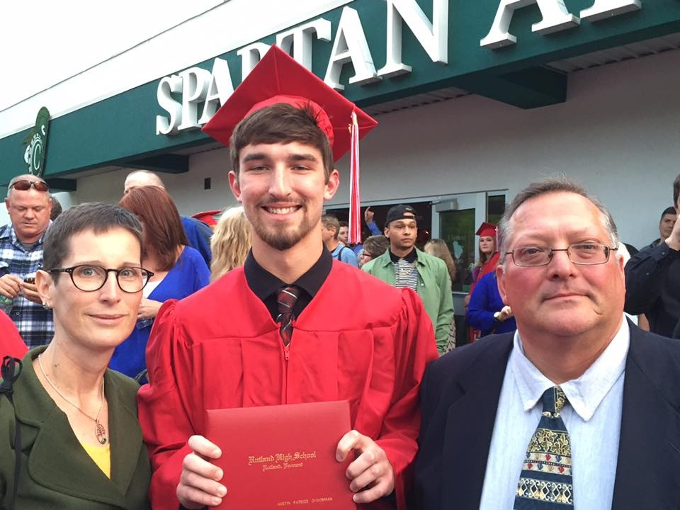
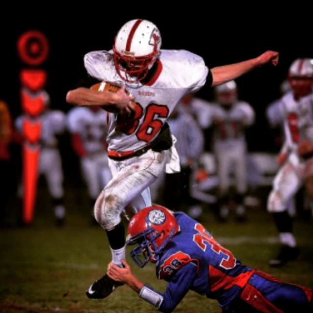
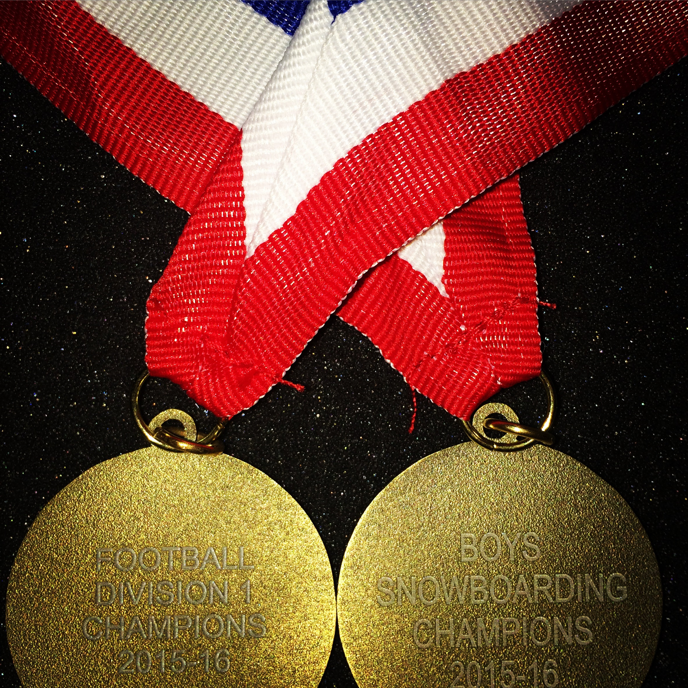
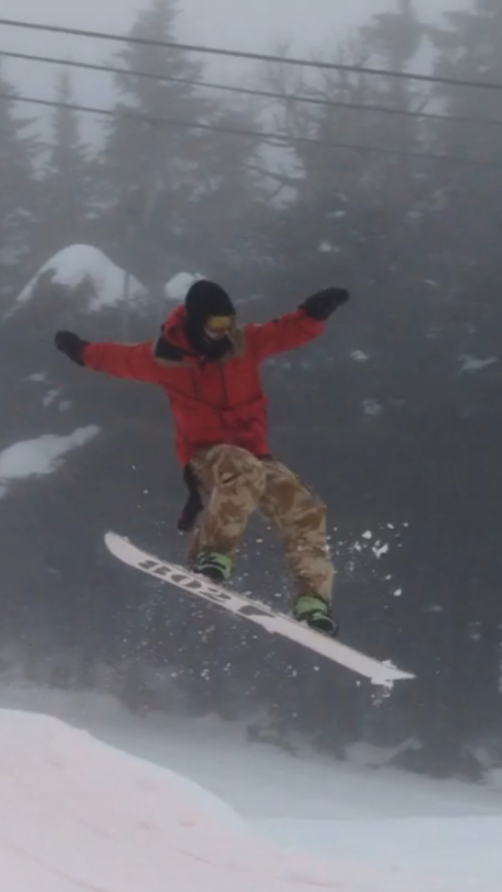
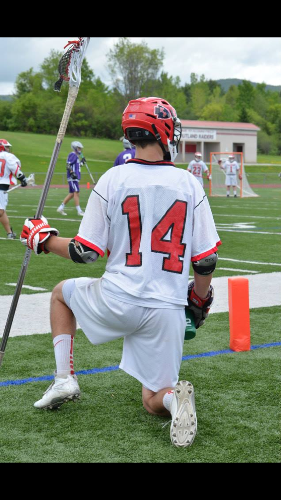
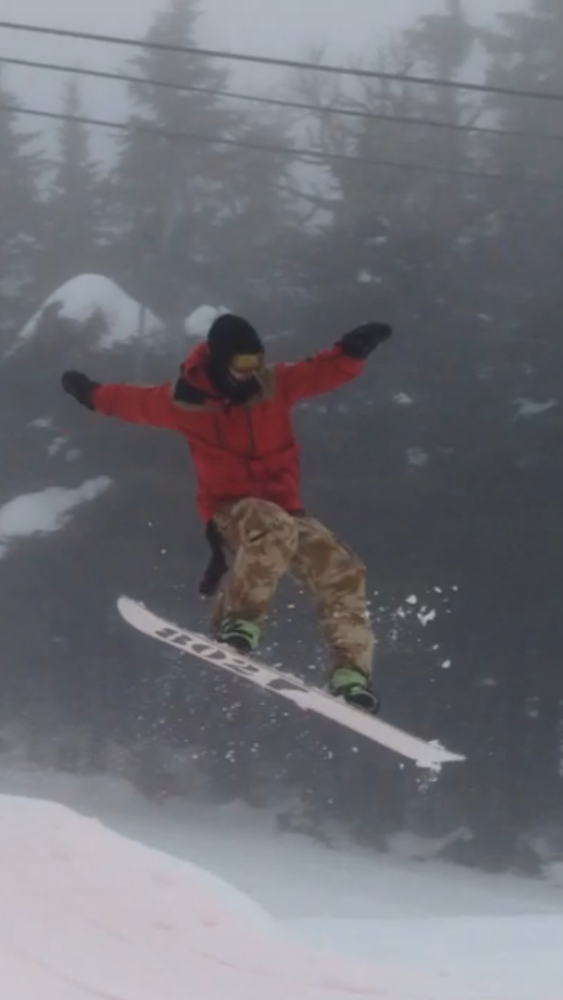
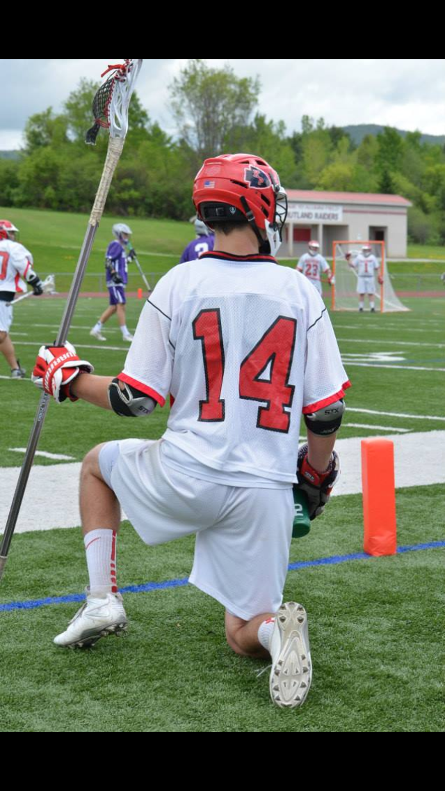
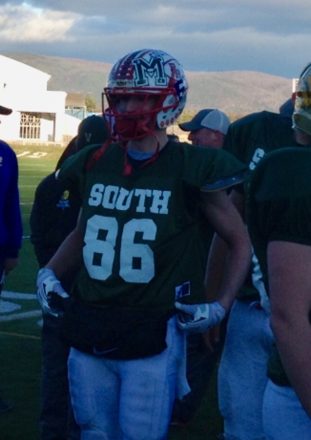
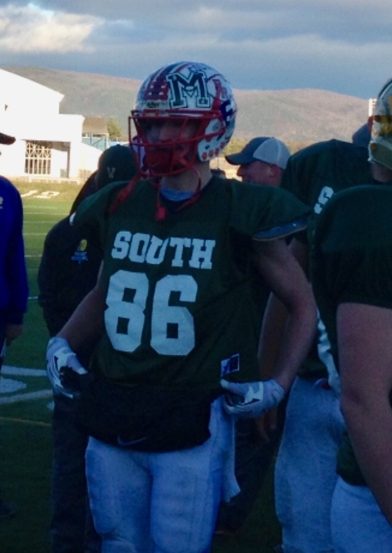

My Interests
These are two links to my YouTube Channel that will bring you to a couple edits that I made using GoPro software and cameras.
Another Day At Dorset (Recommended)
A Day At Dorset (First Edit)
I was raised in Rutland, Vermont by James O'Gorman and Christine O'Gorman. I graduated Rutland High School in 2016 as a tri-sport athlete. I was on the Football, Lacrosse, Snowboarding, Indoor Track, and Basketball Teams. I was also a part of the 2015 Vermont State Championship football team and the 2015-2016 State Championship Snowboard Team.



My college experience began in the fall of 2016 up in Orono, Maine. I am currently attending the University of Maine Business School as an undergraduate.


I travel and explore a lot and have been all over the U.S and parts of Canada.
This is my Hometown of Rutland, VT.

A popular snowboarding/hiking spot in Vermont

View from the house in San Diego.

A beach in Hawaii.

A friends house in Vermont

The Burlington Waterfront near the University of Vermont.

Photos From My Athletic Career
 



 


 Home Page
Home Page